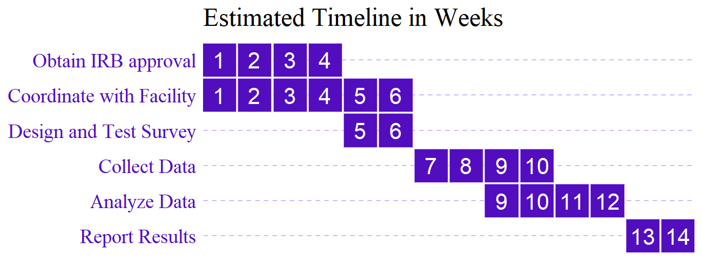
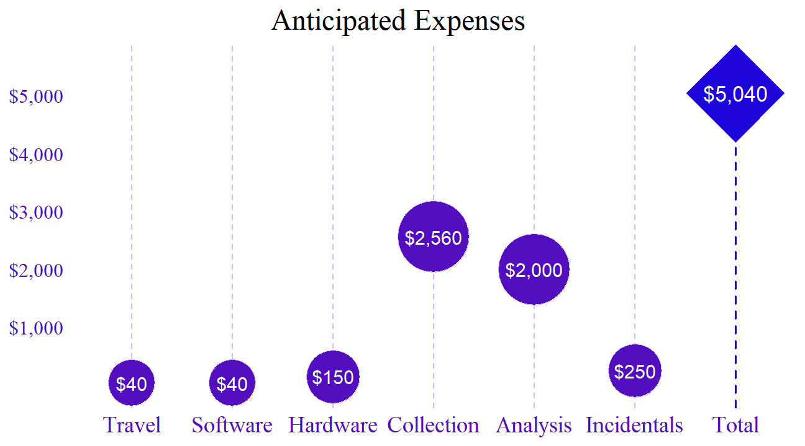

{kind=link}
{kind=link}

Introduction
Public safety is important, but it is often framed as a law-and-order problem to be solved with harsher punishment for those committing crimes. This solution, however, can have negative consequences for families and communities leading to more crime and more harm rather than less. Even before being convicted of a crime, people are detained in jails, sometimes for months or years, simply because of the inability to pay bail.
As of January 2023, Illinois became the first state to fully abolish cash bail through the 2021 SAFE-T Act (Reichert et al., 2021). Over the past few years, several other states, including New York, New Jersey, and California, have reformed the practice of cash bail by eliminating it for certain crimes (Searcy, 2022). While some opponents to these changes worry that releasing individuals charged with a crime while they await trial will cause an increase in crime, there is no evidence of a correlation with increased crime rates (Preston & Eisenberg, 2022b). In fact, the opposite may be true; some places where cash bail has been largely eliminated have seen lower increases in crime than the national average or even reductions in crime when most places have seen increases due to the COVID-19 pandemic (Covert, 2022; Preston & Eisenberg, 2022a). Not only does cash bail not cause an increase in crime rates, but research suggests that increased pretrial detention is linked with higher rates of conviction and recidivism, contributing to increased crime overall (Gupta et al., 2016; Lowenkamp, 2022). The cash bail system and pretrial detention do not seem to meaningfully promote or maintain public safety but may negatively influence economic and social outcomes for families and communities.
Bail reform, including the elimination of money bail for most misdemeanor offenses, has been shown to reduce socioeconomic inequality in the justice system, increase compliance with future court dates, and has saved the county and defendants millions of dollars (Widra, 2022). These policies certainly decrease the length of time individuals are detained, and the negative impacts of detention have been well documented (Digard & Swavola, 2019; W. Sawyer, 2018; Subramanian et al., 2020). Aside from less quantifiable consequences such as job and income loss while detained, time away from children and family, and the impact and trauma of those relying on the individual for financial and emotional support, there is plenty of empirical support linking pretrial detention to higher rates of conviction (Digard & Swavola, 2019). Reducing the amount of time individuals spend in jail before they are ever convicted of a crime is essential to increasing equality, reducing factors that contribute to poverty, and reducing overall harm to families and communities.
In 2023, almost half a million people were detained in jails pretrial in the US (P. P. Sawyer & Wagner, 2023). Most people detained pretrial remain detained because of their inability to pay the bail amount. Detaining individuals without due process is not only unconstitutional and potentially a human rights violation, but it also negatively impacts families and communities. According to a 2018 study, more than half of inmates in local jails were parents to children under 18, and that proportion was even higher for women (W. Sawyer, 2018). Guilty or not, detaining parents harms children; the harm to children of incarcerated parents is often difficult to quantify because it ranges from financial, emotional, and mental health strains, to community impacts, especially due to income and racial disparity of the communities most impacted (Child Trends & Justice Mapping Center, 2016).
Using a survey of adults detained due to unaffordable bail, this research aims to illustrate the true cost of pretrial detention on families and communities. The proposed research will explore economic and social impacts on individuals directly impacted by pretrial detention. Using mostly quantitative questions and options for open-ended explanations of certain answers, a more holistic assessment of the true benefit of eliminating cash bail can be determined as it pertains to those directly impacted by the criminal justice process. By investigating the impacts of pretrial detention on individuals, policymakers can better assess the true cost of pretrial detention for families impacted as more jurisdictions move away from the cash bail system.
Literature Review
The Fourteenth Amendment of the US Constitution protects liberty and equality stating, “No State shall make or enforce any law which shall abridge the privileges or immunities of citizens of the United States; nor shall any State deprive any person of life, liberty, or property, without due process of law; nor deny to any person within its jurisdiction the equal protection of the laws” (Fourteenth Amendment to the US Constitution, 1868) Cash bail systems violate this right by imprisoning individuals who have not been convicted of a crime simply for their inability to pay bail.
Money bail systems have long been utilized by the criminal justice system to detain individuals arrested for a crime while they await trial. In a study published in the Stanford Law Review, researchers found that pretrial detention leads to individuals pleading guilty simply to be released, receiving longer jail sentences, and it can increase the likelihood of the individual committing future crimes (Heaton & Stevenson, 2016). Detaining individuals because they are poor has a negative social and economic impact because it removes people from their families and their jobs. By reducing negative social and economic impacts, factors that contribute to poverty can be lessened or eliminated. A wealth of research exists to support the theory that poverty and inequality are positively correlated with increased crime (Fajnzylber et al., 2002; Fleisher, 1966; Freeman, 1999; Mohammed et al., 2018). Additionally, the issue of racial disparities in earnings is also a well-researched subject (Akee et al., 2019; Intrator et al., 2016; Liu et al., 2017).
Not only is much of the previous research about child and family impacts of incarceration not up to date with ongoing trends of continuously increasing incarceration, many either focus on long-term imprisonment or do not distinguish between incarceration in jails pretrial or in prison after conviction (Gabel & Shindledecker, 1993; Miller, 2006; Parke & Clarke-Stewart, 2002). The recent research that does exist supports the fact that parental incarceration has negative impacts on children’s outcomes physically, mentally, and economically (Lee et al., 2013; Turney & Goodsell, 2018). While some have attempted to assess the true impact of detention on children and families, it often comes with suggestions on mitigating the harm caused by the prison industrial complex by providing services to affected families instead of removing the root cause of unnecessary incarceration (Uggen & McElrath, 2014).
In a survey conducted by George Mason University in 2016, 40.5% of detained parents reported that being in jail has or would change the living situation for their children (Kimbrell & Wilson, 2016). The impact on children, when the parent they rely on for emotional and financial support is separated from them, can be traumatic, significant, and permanent (Miller, 2006). The same survey also revealed that of the participants, 69.9% were employed before being detained, and of those 84.3% worried they would lose employment due to detention (Kimbrell & Wilson, 2016). While this study describes pretrial detainees and their relationship with economic and family status, it lacks depth concerning the impacts of detention on employment and childcare. Most of the research on the impacts of incarceration relies largely on observational data such as crime rates, unemployment, and poverty rates (Baughman, 2017; Heaton & Stevenson, 2016; Miller, 2006).
Concepts and Measurement
While there are arguably many positive outcomes that could be impacted by bail reform and the elimination of cash bail, the most important impacts may include reduced negative social and economic impact, reduction of factors that contribute to poverty, and reduced crime and harm in general. Several of these outcomes have begun to garner attention from advocates publishing data on changes after these reforms (Heaton, 2022; Widra, 2022). Some of these impacts can be broad and difficult to measure. However, by conducting surveys with individuals directly impacted by pretrial detention, this research hopes to quantify and illustrate the benefit of allowing those charged with a crime to remain with their families, in their homes, and supported by their communities while they await trial.
While there are many factors that contribute to poverty, the financial and emotional stress on non-detained family members, including family separation and job loss are measurable attributes to assess the impact of pretrial detention. Financial and emotional stress on non-detained family members are key contributors to poverty; many children rely on one parent working multiple jobs to make ends meet, and emotional support is often lacking in low-income families. Removing the only source of income and support from children can have lasting traumatic impacts, both financially and emotionally (Gabel & Shindledecker, 1993; Parke & Clarke-Stewart, 2002; Turney & Goodsell, 2018). Detention can lead to worse educational outcomes, risk-taking behavior, and mental health issues for children when separated from their parents (Lee et al., 2013). Employment is a direct link to income; for most people, without employment, there is no income, and lack of income directly contributes to poverty. If individuals have jobs when they are arrested, but lose them due to extended detention, they are in a worse position when they are released, as are their families.
The purpose of this study is to both describe and explain the impacts of pretrial detention. The survey component will illustrate the characteristics of individuals directly impacted by detention and their personal experiences. By supplementing this descriptive analysis about who is detained with nuanced questions about the personal impact of detention, a more holistic assessment of pretrial programs is possible. Through regression analysis of the characteristics of people detained pretrial and summary analysis of their personal experiences, this research will provide insight to policymakers who are charged with maintaining public safety and supporting impoverished communities.
When measuring social and economic impact, it is important to be explicit about the indicators used to assess the abstract concepts that make up social and economic well-being. To determine the rate of household providers detained and how the people who depend on them for financial, emotional, and physical support are impacted, a survey of individuals detained and awaiting trial will be conducted. The unit of analysis for the survey is individuals detained and charged with a misdemeanor offense who were not denied bail. This is a cross-sectional study assessing the responses of detained individuals at one point in time during their pretrial detention. The level of measurement is dependent on the variable being measured; to assess the scope of the problem, dummy and interval-level variables will be used to measure information about parental status, employment status, number of dependents, and the length of detention. For variables about the expected impact on children and dependents, ordinal-level responses will be evaluated as well as open-ended answers about their family situations.
To measure the severity of the problem, the rate of individuals detained with minor children in their custody or family members who rely on them for emotional and financial support will show the extent that detention affects families. It is important to note that the level of support from the detained parent expected from the family may differ, and the self-reported amount of support may be inflated due to social desirability bias. The number of individuals employed at the time of arrest who have lost (or expect to lose) employment due to detention will illustrate the drain on the economy overall and especially, for those who directly rely only on income from personal employment. The length of detention and type of arrest charge should also be considered to isolate the impact of alleged crimes of desperation versus alleged violent crimes.
Because the vast majority of individuals detained pre-trial are those who cannot afford bail, it may be safe to assume that they would not have adequate savings or other income sources for their families while they are detained. If they did have these resources, there would be no reason for them to remain detained. By learning how their dependents will support themselves without them, the ripple effect of unnecessary detention is illuminated. The lucky ones may have family members to care for children and other dependents, but more likely, children may be placed in the care of the state or other entity, and even if released and exonerated, the process of regaining custody can be burdensome, especially for low-income families of color.
The most complex and abstract concept to measure is perhaps the emotional and physical impacts on the dependents of detained individuals, usually children. The emotional toll of detention stretches much further than the jail cells. Parents and caregivers provide more than mere financial support, the psychological impacts on children with an incarcerated parent are subtle and difficult to quantify. However, by asking the detained parents themselves about the perceived or expected impact of their detention on their children’s emotional or mental health, family stability, and risks to their children’s outcomes, the true total cost of pre-trial detention can begin to take shape.
While validity issues are inherent in survey research, the most important threats to validity in this context are social desirability bias and non-response bias. People responding to these questions are detained may believe that their responses might influence the length of their detention which may lead some people to exaggerate or simply lie and provide answers that they think will improve their situation. Although the survey administrators can remind the respondents that their responses are anonymous and have no influence on their case, because of the social construction of people who have been charged with a crime, they may be inclined to present themselves as sympathetically as possible. It is impossible to avoid this type of threat to validity entirely in a survey of a community with such a negative social construction, but by ensuring that the questions accurately reflect the variables they are measuring and regard participants with the respect they deserve as humans in a terrible situation, the threat to validity can be reduced.
The reliability of this method is strengthened by the fact that the conditions and surroundings of the survey process are consistent. The survey will be administered at the jail where respondents are detained in private rooms designated for legal counsel; the respondents will answer the questions themselves on a tablet provided by the researcher and in the presence of the researcher. Because the respondents are under constant supervision in detention and generally deprived of contact with the outside world at the time of the survey, an interaction with someone taking an interest in their situation is likely a welcomed encounter. To ensure consistency, the researcher will only provide standardized and limited clarifying information about survey questions. Although, other unavoidable reliability threats still exist, as the environment in jail is volatile and can severely impact the disposition of respondents.
Methodology and Sampling
Subjects
Most bail reform policies begin by limiting or eliminating bail for misdemeanor arrests. Without cash bail, judges retain the use of their discretion to remand defendants deemed a threat to the community or a flight risk. It is safe to assume that someone who is denied bail when bail is available, would not be released without bail. The focus of this study is people who are detained pretrial simply because they do not have the ability to pay bail, and who would presumably be released to await trial at home if reforms were enacted. Individuals who have been arrested for misdemeanor offenses, have not been denied bail, and are detained pretrial will be the subject of this research. Once the sample of respondents is selected, the organization will contact the facility with the list of individuals to be surveyed according to the previously established procedure for visitation. The scope of this study will be people detained in a single county jail over the course of four weeks.
Design
While survey research has its inherent weaknesses due to the nature of self-reported data, to understand and attempt to measure the emotional and social impacts of pretrial detention, it can be a useful tool to capture a more complete assessment of the unseen costs of these policies. By asking people directly impacted by the bail system quantitative questions about the level of impact on their families, and following up with the opportunity for respondents to expand on their answers in open-ended quantitative questions about the specific struggles their families are facing while they are detained. Though parents can only answer these questions to the best of their knowledge about how their families are impacted, it would be nearly impossible and unethical to ask children themselves since being separated from a parent or caregiver can already be a tumultuous and traumatic event for a child. The results of these responses can be compared to existing statistics about student performance and high-risk behavior in areas with high arrest rates, but these statistics would be generalized to the community and not the specific individuals and their families.
Measures
Measuring abstract concepts like social support, family stability, mental health, and risk of negative outcomes offers challenges including important validity concerns. Support or risks may look different to different people; these concepts can be difficult to quantify. Below are examples of the broad nature of possible questions, and these questions will be supplemented with approximately five additional specific questions about each concept. Using a five-point ordinal scale for each general question and the additional specific questions, a composite of the specific questions can be used alongside the self-reported value of the general questions. By comparing the answers to both specific and general questions, the validity of each is strengthened if they are consistent.
Among the data collected, the variables hypothesized to have the most significant relationship with family outcomes are parental status, level of involvement, and the number of dependents; employment status or change in employment status; and the length of detention in days. Using regression analysis with these control variables should help to isolate the impact of detention on the well-being of children impacted by this system. Though the level of parental involvement cannot be asked outright, due to certain bias in the responses, by asking a variety of questions about the type of support, activities, and living situations regarding their children, a composite score from one to ten can be calculated to represent the level of involvement.
For example, to assess social support, additional questions about who is providing care and support to dependents while they are detained. The supplemental questions will be ordinal- or dummy-level variables, and some may be contingent on previous answers. The level of involvement indicated will provide a weight for some of the responses to reflect the expected amount of impact. For example, if the parent’s involvement is high (i.e., single parent without child support) questions may be weighted for higher representation. On the other hand, the responses from minimally involved or absent parents (i.e., parents with children in another state) will be weighted less. To further account for the validity of these subjective topics, each section of questions will conclude with an open-ended question about the topic for respondents to provide additional information and context.
Sample Questions
- How much social support does your family have aside from yourself?
- If you provide the primary financial support for your family, is there someone you know and trust who is able to ensure they have food and housing?
- If there is another parent involved, has their involvement increased?
- How would you describe your family’s stability while you are detained?
- Has your detention changed your family’s housing situation?
- Has your detention changed your family’s housing status?
- Is your family at a different residence while you are detained?
- If so, are they with another immediate family member?
- An extended family member?
- A non-related friend?
- A stranger/state custody?
- How much do you expect that your detention will negatively impact your child(ren)’s emotional and mental health?
- How old are your child(ren)?
- If they are young, do they understand where you are?
- If they are older, do you know how they feel about where you are?
- If so, is it positive, negative, or indifferent?
- Do you think that separation from your child(ren) will increase the risk of negative outcomes?
- If they are young, does your absence increase their exposure to unknown influences (different school, foster care, etc.)?
- If they are older, does your absence decrease supervision, guidance, or saftey for your child(ren)?
An additional issue exists concerning the nature of the respondents’ social construction, and their awareness of the negative light in which detained people are viewed, regardless of their lack of a guilty conviction. Detained respondents know that the general public assumes they are guilty and would rather not think of them as people with families and lives outside of this unfortunate situation. This reality can lead to self-advocacy bias in responses. Respondents may want to appear more sympathetic by inflating or even lying outright about their involvement or expected impact. Unfortunately, there is no way to ethically avoid this altogether, but the strategy of asking specific follow-up questions and open-ended questions will hopefully reduce this possibility and help identify fraudulent responses.
Procedure
This research project consists of the following six stages: a) obtaining approval from the Institutional Review Board (IRB), b) designing and testing the survey, c) obtaining a sampling frame and determining the appropriate sample size, d) collecting data via supervised self-administered surveys, e) analyzing the data, and f) distribution of the results.
a) Approval
Survey research has less potential for harm to participants than more invasive methods might but considering the vulnerability of the subjects in this study, extra care must be taken to ensure their identities remain anonymous. While it would be useful from a data collection perspective to request personal information about respondents in order to follow up with them after their case is concluded to determine the long-term implications of pretrial detention, that approach would raise additional ethical and security concerns about the data that can be avoided by allowing respondents to remain anonymous.
b) Survey Design
While the main topics and variables have been determined, the exact wording and format of the survey will need to be designed and tested. Due to the sensitive nature of some of the topics of interest, it is important to include reviews and feedback from people who have direct experience with the criminal justice system. This includes people who have been detained themselves, family members of detained or formerly detained people, and individuals who participate in the process (judges, prosecutors, corrections officers, court clerks, etc.).
c) Sampling
Since the population of a county jail has continuous turnover, the sampling frame would need to be determined each day the survey is administered. Over the four-week period, one weekday (Monday - Thursday) and one weekend day (Friday - Sunday) will be chosen at random to select the survey dates. On the scheduled days, a list of individuals detained on misdemeanor charges will be obtained from the jail, and anyone who has been denied bail will be removed. From the final list, a sample will be stratified by the type and number of misdemeanor charges. The types and number of charges against individuals detained pretrial may vary greatly; some may be as innocuous as a public intoxication charge or even loitering, while others may involve violence or a large number of various criminal charges. Stratification ensures representation among varying severity and types of alleged criminal activity.
With a goal of completing approximately thirty surveys each day over eight different visits, the complete sample should contain around 240 responses. Once the collection day sample list is determined, the list of individuals will be sent to the facility in accordance with the predetermined visitation policy. Non-response is an issue that may be limited by the nature of detention; there are no prior commitments that could take priority for potential respondents, so there is an expectation for a high response rate. In the case that an individual selected does not wish to participate, an additional random selection from the strata from which they were drawn can be re-drawn to maintain the final sample size.
d) Data Collection
The survey will be administered by one of two researchers, each with a goal of fifteen surveys per visit. Because of security and the bureaucratic nature of correctional facilities, delays and other obstacles are expected. Each survey should take about 15-20 minutes to complete. However, because these types of facilities are not known for efficiency, to reasonably meet a goal of fifteen surveys for each researcher, the amount of time for each response has been doubled.
Detention facilities are equipped with small private rooms for detained individuals to meet with legal counsel and other advocates while detained. Access to these rooms can be acquired through connections and agreements between the organization and the facility. Each researcher will use a tablet with a digital version of the survey. Since the tablet must remain in the room, the survey will be answered by the respondent, but the research will be present for the duration. In a situation where the respondent has clarifying questions about the survey, the researcher will be able to clarify specific things according to a predetermined script.
e) Analysis
Once the data has been collected, it will need to be cleaned and analyzed. Because the surveys were administered digitally, the responses will be automatically uploaded. Due to the validity issues discussed earlier, the data will be thoroughly examined to identify possible fraudulent answers. Answers that are inconsistent or very extreme and lack qualitative explanations in open-ended questions may be discarded. After careful cleaning and assessment, the data will be analyzed through multiple regression analysis including a variety of control variables to isolate the relationship between different individual characteristics and circumstances and the outcome variables identified.
f) Distribution
A final, simple report of the findings will be prepared along with several tables and visualizations of the result for publication through the organization and for distribution to policymakers considering reforms to the current bail system, both in this locality and others who are considering changes.
Conclusion
Anytime nuanced, abstract concepts are studied and quantified, there will always be threats to validity. For as long as concepts like well-being and stability have been studied, researchers and decision-makers have debated how well a measure captures the essence of the concept under scrutiny. Social desirability bias and self-advocacy bias inherent in survey methods, especially for groups who have a negative social construction, can further distort the results; however, the variety of questions and supplemental open-ended responses hope to reduce threats to validity by measuring concepts with multiple methods for comparison. Additionally, key survey questions are based on perceived or expected impacts since further ethical considerations exist regarding the observation of minors who are directly impacted by pretrial detention.
Since this survey would be distributed in only one county jail for the purpose of this study, the results may not be generalizable to other places. However, the study is designed so that it could easily be reproduced in other localities with only minor modifications for broader analysis. Since different municipalities have different policies regarding pretrial detention and cash bail, this study would only be appropriate for places where bail reform is needed and under consideration.
With a design and a plan for this research in place, the next step is to apply for IRB approval and begin conversations with the facility to arrange for the survey distribution in person. Since both the IRB approval and detention facility coordination processes can be tedious, lengthy, and unpredictable, taking the initial steps should begin as soon as possible. In completing those tasks, the proposed timeline can be scheduled along with exact visit days and deadlines for survey formulations and analysis. Since the surveys will be administered digitally, the results will be immediately available. Preliminary analysis can begin as soon as data collection begins to identify early trends and adjust hypotheses if needed.
Since the first two tasks, obtaining IRB approval and coordinating with the facility, are subject to timelines outside of the researchers’ control, they should be completed as soon as possible. IRB approval is required to move forward with the study, however, the logistics between the facility and researcher are not necessary until after the survey is designed and tested. Figure 1 outlines the estimated timeline in weeks. Four weeks are allotted for IRB approval, but that may vary depending on a number of factors. By week six, the survey should be ready, and a schedule decided with the facility. Weeks seven through ten is when the data will be collected (approximately thirty surveys per day, twice a week). Before the collection of the data is complete, preliminary analysis can begin around week nine, and a full analysis should be complete by week twelve. The final two weeks will be spent finalizing a written report for advocates and policymakers.

The cost of any research endeavor must not exceed the benefit of the study. The paperless design of this study with digitally administered surveys via tablets will reduce the costs and time needed to collect and process data. The convenience of respondents having the same location at the time of the survey also conserves resources and time.
The summary of anticipated expenses shown in Figure 2 illustrates the breakdown of expected costs. The costs incurred for survey design and distribution include travel to the facility, survey software or subscription, two tablets, and wages for researchers on-site. By far, labor costs exceed the costs of all other expenses. Two researchers administering surveys paid $20 per hour for eight eight-hour days at the facility would cost $2,560 in total. All other expenses regarding data collection are expected to total less than $250 (approximately $40 for travel, $40 for survey software, and $150 for tablets). An additional $2,000 in labor costs for analysis is equivalent to $25 per hour for 80 hours of work from a data analyst. In the case of unexpected incidentals, an extra $250 has been allotted for any unexpected expenses. The total estimated budget for this study is $5,040.
Once the study is complete, the final report will be published online through the organization. A one-page summary and an infographic with key findings will also be distributed to key policymakers and advocates for bail reform. The infographic and other visualizations may also be shared on social media to increase public awareness and influence.
References
Akee, R., Jones, M. R., & Porter, S. R. (2019). Race Matters: Income Shares, Income Inequality, and Income Mobility for All U.S. Races. Demography, 56(3), 999–1021. https://doi.org/10.1007/s13524-019-00773-7
Baughman, S. B. (2017). Costs of Pretrial Detention. Boston University Law Review, 97(1), 1–30. https://heinonline.org/HOL/P?h=hein.journals/bulr97&i=12
Covert, B. (2022, July 19). Bail Reform Helps Countless People. Why Don’t We Hear More of Their Stories? The Appeal. https://theappeal.org/bail-reform-success-stories-media-coverage/
Digard, L., & Swavola, E. (2019). Justice Denied: The Harmful and Lasting Effects of Pretrial Detention. https://www.vera.org/downloads/publications/Justice-Denied-Evidence-Brief.pdf
Fajnzylber, P., Lederman, D., & Loayza, N. (2002). Inequality and Violent Crime. The Journal of Law and Economics, 45(1), 1–39. https://doi.org/10.1086/338347
Fleisher, B. M. (1966). The Effect of Income on Delinquency. The American Economic Review, 56(1/2), 118–137. http://www.jstor.org/stable/1821199
Fourteenth Amendment to the US Constitution. (1868). United States Constitution. https://constitution.congress.gov/browse/amendment-14/
Freeman, R. B. (1999). The Economics of Crime. In Handbook of Labor Economics (Vol. 3, pp. 3529–3571). Elsevier. https://doi.org/10.1016/S1573-4463(99)30043-2
Gabel, S., & Shindledecker, R. (1993). Characteristics of Children Whose Parents Have Been Incarcerated. Psychiatric Services, 44(7), 656–660. https://doi.org/10.1176/ps.44.7.656
Gupta, A., Hansman, C., & Frenchman, E. (2016). The Heavy Costs of High Bail: Evidence from Judge Randomization. The Journal of Legal Studies. https://doi.org/10.1086/688907
Heaton, P. (2022). The Effects of Misdemeanor Bail Reform. Quattrone Center for the Fair Administration of Justice. https://www.law.upenn.edu/institutes/quattronecenter/reports/bailreform/#/
Heaton, P., & Stevenson, M. (2016). The Downstream Consequences of Misdemeanor Pretrial Detention. SSRN Electronic Journal. https://doi.org/10.2139/ssrn.2809840
Intrator, J., Tannen, J., & Massey, D. S. (2016). Segregation by race and income in the United States 1970–2010. Social Science Research, 60, 45–60. https://doi.org/10.1016/j.ssresearch.2016.08.003
Kimbrell, C. S., & Wilson, D. B. (2016). Money Bond Process Experiences and Perceptions. George Mason University Department of Criminology, Law and Society. https://www.prisonpolicy.org/scans/Money_Bond_Process_Experiences_and_Perceptions_2016.pdf
Lee, R. D., Fang, X., & Luo, F. (2013). The Impact of Parental Incarceration on the Physical and Mental Health of Young Adults. Pediatrics, 131(4), e1188–e1195. https://doi.org/10.1542/peds.2012-0627
Liu, B., Wei, Y. D., & Simon, C. A. (2017). Social Capital, Race, and Income Inequality in the United States. Sustainability, 9(2, 2), 248. https://doi.org/10.3390/su9020248
Lowenkamp, C. (2022). The Hidden Costs of Pretrial Detention Revisited. Arnold Ventures. https://craftmediabucket.s3.amazonaws.com/uploads/HiddenCosts.pdf
Miller, K. M. (2006). The Impact of Parental Incarceration on Children: An Emerging Need for Effective Interventions. Child and Adolescent Social Work Journal, 23(4), 472–486. https://doi.org/10.1007/s10560-006-0065-6
Mohammed, I., Hosen, M., & Chowdhury, M. A. F. (2018). Does poverty lead to crime? Evidence from the United States of America. International Journal of Social Economics, 45(10), 1424–1438. https://doi.org/10.1108/IJSE-04-2017-0167
Parke, R., & Clarke-Stewart, K. A. (2002). Effects of Parental Incarceration on Young Children [Papers prepared for the "From Prison to Home" Conference (January 30-31, 2002)]. U.S. Department of Health and Human Services. https://webarchive.urban.org/UploadedPDF/410627_ParentalIncarceration.pdf
Preston, A., & Eisenberg, R. (2022a, June 23). Don’t Blame Bail Reform for Gun Violence. Center for American Progress. https://www.americanprogress.org/article/dont-blame-bail-reform-for-gun-violence/
Preston, A., & Eisenberg, R. (2022b, September 19). Cash Bail Reform Is Not a Threat to Public Safety. Center for American Progress. https://www.americanprogress.org/article/cash-bail-reform-is-not-a-threat-to-public-safety/
Reichert, J., Zivic, A., & Sheley, K. (2021, July 15). The 2021 SAFE-T Act: ICJIA Roles and Responsibilities. ICJIA | Illinois Criminal Justice Information Authority. https://icjia.illinois.gov/researchhub/articles/the-2021-safe-t-act-icjia-roles-and-responsibilities
Sawyer, P. P., & Wagner, P. (2023). Mass Incarceration: The Whole Pie 2023. Prison Policy Initiative. https://www.prisonpolicy.org/reports/pie2023.html
Sawyer, W. (2018). How does unaffordable money bail affect families? Prison Policy Initiative. https://www.prisonpolicy.org/blog/2018/08/15/pretrial/
Searcy, S. (2022, October 26). Other states with bail reform. WHBF - OurQuadCities.com. https://www.ourquadcities.com/news/state-news/illinois-news/other-states-with-bail-reform/
Subramanian, R., Digard, L., Washington II, M., & Sorage, S. (2020). In the Shadows: A Review of the Research on Plea Bargaining. Vera Institute of Justice. https://www.vera.org/downloads/publications/in-the-shadows-plea-bargaining.pdf
Turney, K., & Goodsell, R. (2018). Parental Incarceration and Children’s Wellbeing. The Future of Children, 28(1), 147–164. https://www.jstor.org/stable/26641551
Uggen, C., & McElrath, S. (2014). Parental Incarceration: What We Know and Where We Need to Go Criminology. Journal of Criminal Law and Criminology, 104(3), 597–604. https://heinonline.org/HOL/P?h=hein.journals/jclc104&i=625
Widra, E. (2022). What does successful bail reform look like? To start, look to Harris County, Texas. Prison Policy Initiative. https://www.prisonpolicy.org/blog/2022/03/28/harris-county-pretrial-reform-results/